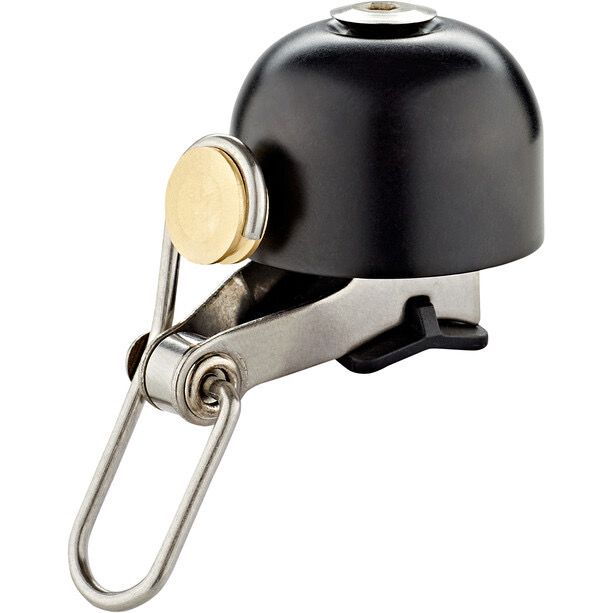
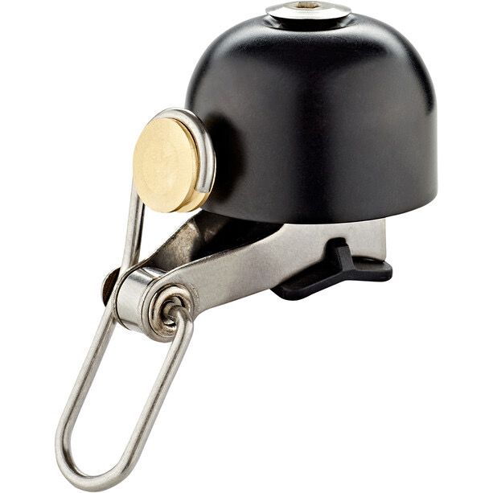

Diese edle Fahrradklingel aus Messing erfüllt nicht nur ihren Zweck als akustisches Signal, sondern sie macht sich auch optisch schön an deinem Rad. Die Klingel sieht dezent aus und lässt sich leicht an jedem Fahrrad montieren.
In den Warenkorb